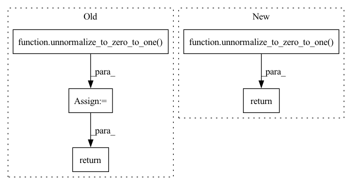

Pattern ID :8085
Before Change
self_cond = x_start if self.self_condition else None
img, x_start = self.p_sample(img, t, self_cond)
img = unnormalize_to_zero_to_one( img)
return img
@torch.no_grad()
def ddim_sample(self, shape, clip_denoised = True):After Change
ret = img if not return_all_timesteps else torch.stack(imgs, dim = 1)
ret = unnormalize_to_zero_to_one( ret)
return ret
@torch.no_grad()
def ddim_sample(self, shape, return_all_timesteps = False):In pattern: SUPERPATTERN
Frequency: 3
Non-data size: 5
Instances Fragment ID: 28654897
Project Name: lucidrains/denoising-diffusion-pytorch
Commit Name: e337d0e34b3aec75f0d3ca10f1efdff739a3ed82
Time: 2023-01-04
Author: lucidrains@gmail.com
File Name: denoising_diffusion_pytorch/denoising_diffusion_pytorch.py
M Class Name: GaussianDiffusion
N Class Name: GaussianDiffusion
M Method Name: p_sample_loop(3)
N Method Name: p_sample_loop(2)
M Parent Class: nn.Module
N Parent Class: nn.Module
M File Name: denoising_diffusion_pytorch/denoising_diffusion_pytorch.py
N File Name: denoising_diffusion_pytorch/denoising_diffusion_pytorch.py
M Start Line: 608
M End Line: 617
N Start Line: 605
N End Line: 621
Before Change
img = self.sample_one_timestep(img, times, times_next)
img.clamp_(-1., 1.)
img = unnormalize_to_zero_to_one( img)
return img
@torch.no_grad()
def sample(self, batch_size = 16):After Change
times_next = steps[i + 1]
images = self.sample_one_timestep(images, times, times_next)
return unnormalize_to_zero_to_one( images)
@torch.no_grad()
def sample(self, batch_size = 16):
return self.sample_all_timesteps((batch_size, self.channels, self.image_size, self.image_size)) Fragment ID: 28654899
Project Name: lucidrains/denoising-diffusion-pytorch
Commit Name: 06b2e52645bc7fb458f2b7efe954bf8416467a4e
Time: 2022-06-28
Author: lucidrains@gmail.com
File Name: denoising_diffusion_pytorch/elucidated_diffusion.py
M Class Name: ElucidatedDiffusion
N Class Name: ElucidatedDiffusion
M Method Name: sample_all_timesteps(2)
N Method Name: sample_all_timesteps(2)
M Parent Class: nn.Module
N Parent Class: nn.Module
M File Name: denoising_diffusion_pytorch/elucidated_diffusion.py
N File Name: denoising_diffusion_pytorch/elucidated_diffusion.py
M Start Line: 113
M End Line: 125
N Start Line: 132
N End Line: 134
Before Change
c * pred_noise + \
sigma * noise
img = unnormalize_to_zero_to_one( img)
return img
@torch.no_grad()
def sample(self, batch_size = 16):After Change
ret = img if not return_all_timesteps else torch.stack(imgs, dim = 1)
ret = unnormalize_to_zero_to_one( ret)
return ret
@torch.no_grad()
def sample(self, batch_size = 16, return_all_timesteps = False): Fragment ID: 28654898
Project Name: lucidrains/denoising-diffusion-pytorch
Commit Name: e337d0e34b3aec75f0d3ca10f1efdff739a3ed82
Time: 2023-01-04
Author: lucidrains@gmail.com
File Name: denoising_diffusion_pytorch/denoising_diffusion_pytorch.py
M Class Name: GaussianDiffusion
N Class Name: GaussianDiffusion
M Method Name: ddim_sample(3)
N Method Name: ddim_sample(3)
M Parent Class: nn.Module
N Parent Class: nn.Module
M File Name: denoising_diffusion_pytorch/denoising_diffusion_pytorch.py
N File Name: denoising_diffusion_pytorch/denoising_diffusion_pytorch.py
M Start Line: 648
M End Line: 653
N Start Line: 631
N End Line: 662